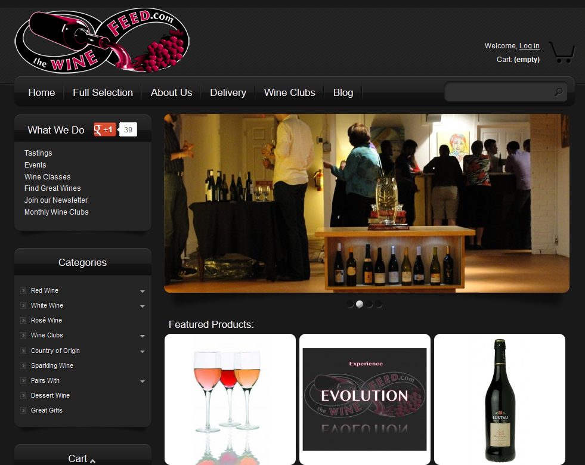
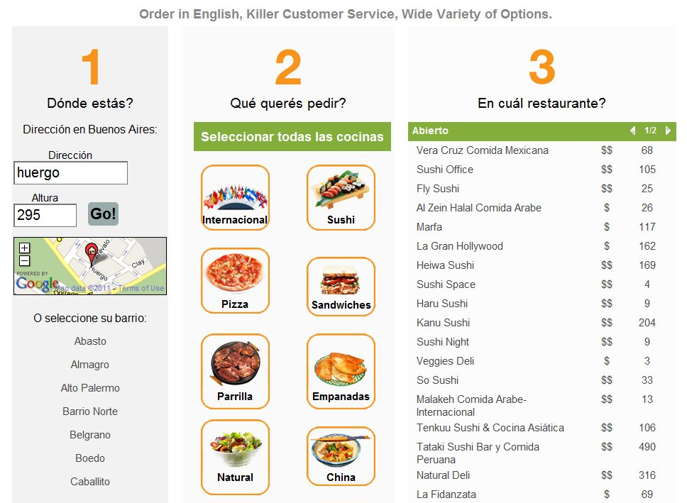

Business logic software dev, requirements, testing, support... for mobile app on custom hardware for 2010 Census survey.
Collaborative Projects
Implemented full e-commerce wine site for store in Raleigh, NC using Prestashop platform.
X
Coded mapping functionality to connect street address to restaurant delivery zones for food delivery website in Buenos Aires.
X
System specifications and requirements gathering with nurses for mobile app to track billing and progress of dialysis patients.